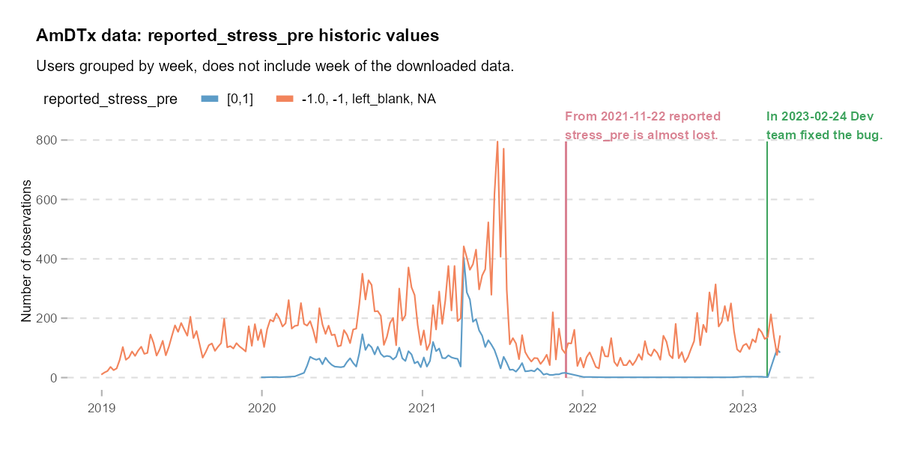
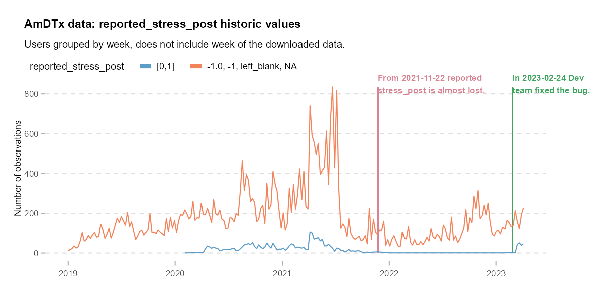

Mood quality vs Reported stress
Problem
We need to verify if the variables mood_quality_pre & mood_quality_post in the database have any information and if that information is related to reported_stress_pre & reported_stress_post.
Reported stress situation
The variables regarding the stress slider in the snapshot have not been working properly at least for a year. This plot visualizations can show us the amount of data lost:


Mood quality situation
The variables regarding mood quality do not require a plot visualization, instead its range of values can be summarized in a table:
Table 1: Mood quality
| mood_quality_pre | n |
|---|---|
| -1.0 | 11670 |
| left_blank | 8214 |
| NA | 62886 |
| mood_quality_post | n |
|---|---|
| -1.0 | 4352 |
| left_blank | 3390 |
| NA | 75028 |
Conclusion
The mood quality variables are not adding value to the database so in that sense should no longer be supported.